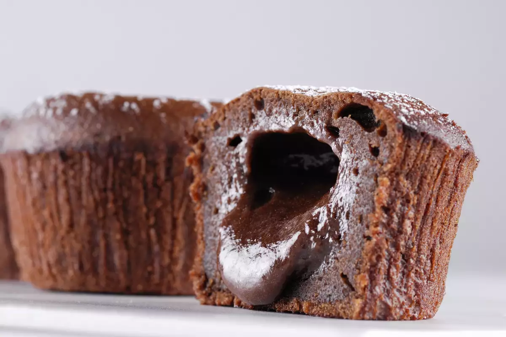
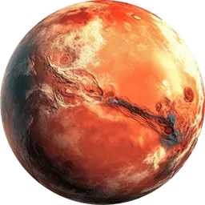

Марсиански шоколадов вулкан

Начин на проготвяне
- Пуснете фурната да се загрява до 220 градуса.
- Разтопете черния шоколад (170 г.) с маслото на водна баня и оставете леко да поизстине.
- През това време разбийте яйцата със захарта и сипете брашното. При непрестанно разбиване добавете и шоколадовата смес.
- Настържете или смелете 100-те грама млечен шоколад и направете от него 8 еднакви топчета. Може да ползвате отново черен, но не много висок процент какао.
- В намазнени съдчета за класическо суфле или флан сипете от шоколадовата смес, поставете във всяка в центъра по една топчица от млечния шоколад и покрийте с останалата смес. Чашките не трябва да са пълни до горе.
- Печете 7-8 минути, през които си подгответе плоски чинии за сервиране, като ги украсите с плодове и плодов топинг. Внимателно обърнете горещия шоколадов десерт в чинията и поднесете веднага, гарниран с топка сладолед с ядки или крокан.
Шоколадов десерт с разтопен център, символизиращ активните вулкани и червения цвят на Марс.
Марс

Факти
- Марс има две луни, Фобос и Деймос. Те са открити през 1877 г. от астронома Асаф Хол, който ги кръщава с гръцките имена „Страх“ и „Ужас“ на конете, които теглели колесницата на бога на войната, чието име носи Марс.
- Марс е наречен на римския бог на войната заради кървавочервения си цвят, който се дължи на богатите на желязо скали и прах.
- През 1609 г. италианският астроном Галилео Галилей наблюдавал Марс с примитивен телескоп. Той се счита за „баща на наблюдателната астрономия“.
- Марс е четвъртата по ред планета спрямо Слънцето и втората най-малка в Слънчевата система. Диаметърът й е 6792 км, което е около 53% от земния.
- Приближаването на Марс до Земята е точката, в която той се намира най-близо до нашата планета – на около 54 млн. км. Явлението се случва на всеки две години.
- Парчета от Марс са падали на Земята!
- Една марсианска година се равнява на 687 земни дни, но един ден на Червената планета трае само с 40 минути повече от земния. Следващата марсианска нова година ще бъде на 23 март 2019 г.
- Марс е планета от земен тип с тънка атмосфера, състояща се предимно от въглероден диоксид, примесен с водни пари.